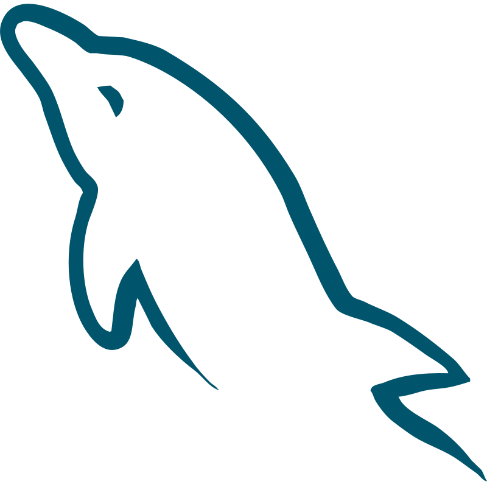

2026
Web Development Projects
Academic and personal projects
Practicing front-end development with HTML, CSS, and JavaScript while exploring PHP, MySQL, and local development environments using XAMPP.
I can make it happen.

I'm a third-year Information Technology student at Pamantasan ng Lungsod ng Valenzuela. My journey in IT is about learning how technology works, creating useful projects, and finding ways to turn ideas into something real.
Outside technology, I enjoy adventure, nature, animals, and visual storytelling through photography and videography. I value personal growth, staying open to new experiences, and learning from the people and situations around me.
I have been exploring web development, programming, networking, databases, and digital design through academic activities and personal projects. I enjoy learning by experimenting, solving problems, and improving my work one step at a time.
I'm still discovering the path I want to specialize in, but I aim to keep building my skills, creating meaningful projects, and growing into a capable IT professional.
2026
Academic and personal projects
Practicing front-end development with HTML, CSS, and JavaScript while exploring PHP, MySQL, and local development environments using XAMPP.
2025–2026
Coursework and laboratory exercises
Exploring network configuration, IP addressing, VLANs, routing, and DHCP through simulated network topologies.
Ongoing
Continuous learning
Strengthening programming fundamentals, Java, JavaScript, SQL, and the connection between front-end interfaces and backend data.
 HTML
HTML CSS
CSS Networking
Networking JavaScript
JavaScript Java
Java Python
Python
MySQL